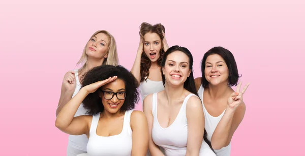

¿Quienes somos Nosotras?
Olympic Fit, fundada en 2019 por un grupo apasionado de amigas entusiastas del fitness, nació de la visión compartida de crear una línea de ropa deportiva revolucionaria. Inspiradas por la falta de opciones cómodas y elegantes para mujeres en el mundo del ejercicio, estas amigas emprendedoras combinaron sus conocimientos en diseño, tecnología textil y marketing para lanzar una marca que desafía los límites de la moda activa.
Esta marca disruptiva se distingue por su compromiso con la comodidad sin sacrificar el estilo. Desde leggings de alto rendimiento hasta camisetas transpirables y sujetadores deportivos innovadores, cada prenda de Olympic Fit es el resultado de una cuidadosa investigación en diseño ergonómico y selección de materiales de la más alta calidad.
Además de su enfoque en la calidad de la ropa, el equipo de Olympic Fit se esfuerza por promover un mensaje de empoderamiento femenino y salud integral. Han creado una comunidad en línea vibrante donde las mujeres comparten sus historias de superación personal, rutinas de ejercicio inspiradoras y consejos de estilo de vida saludable.
A través de colaboraciones con atletas destacadas y programas de apoyo a organizaciones benéficas centradas en la salud y el bienestar de las mujeres, Olympic Fit se ha convertido rápidamente en un símbolo de empoderamiento femenino en la industria de la ropa deportiva.